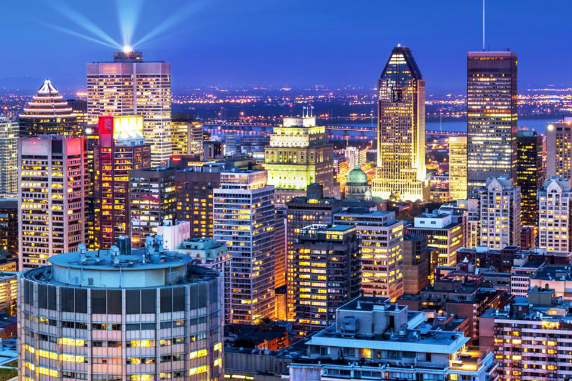
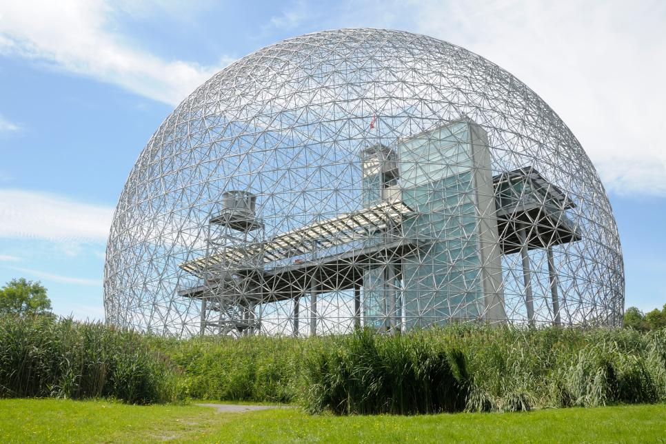
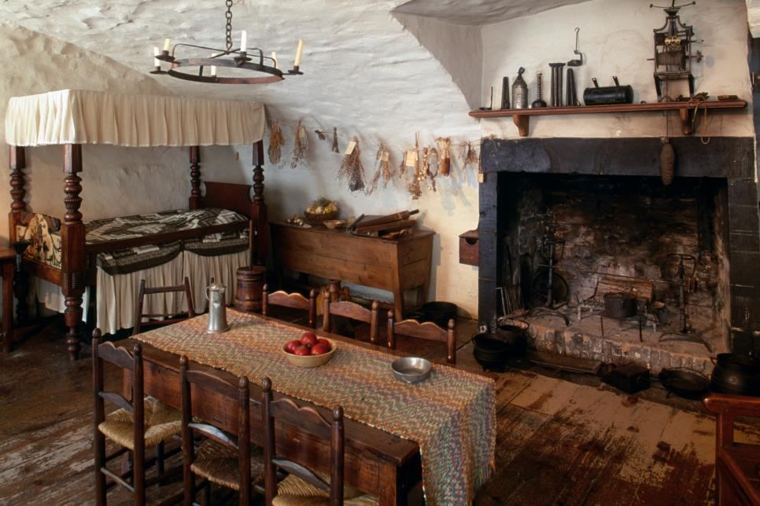
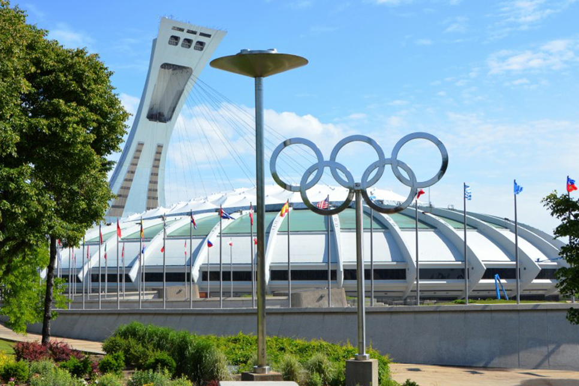
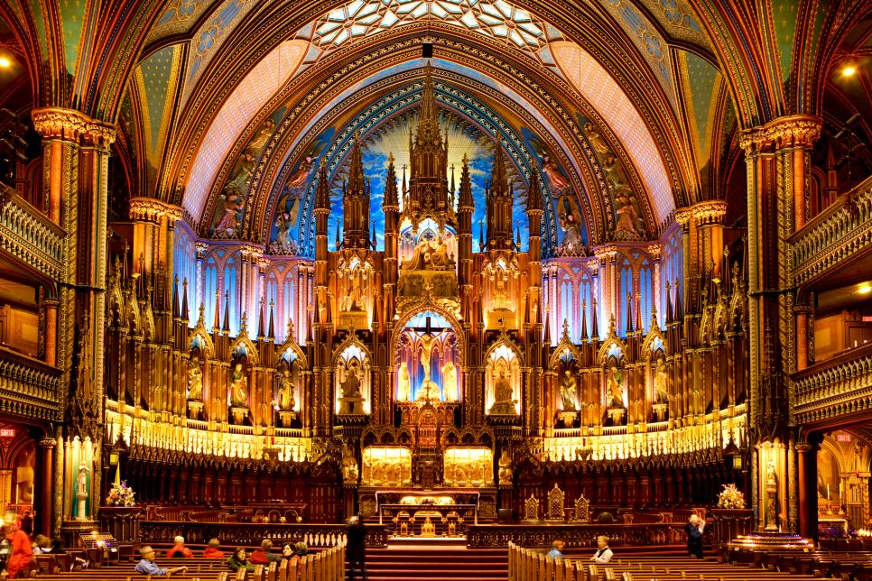

Montreal Skyline
Downtown Montreal's new skyscrapers mix with Old Montreal's centuries-old architecture for an impressive skyline along the St. Lawrence River.

Montreal Biosphere
Built for the 1967 World's Fair, the Montreal Biosphere is now home to an environmental museum that teaches visitors about sustainable development.

Montreal Museum
For museum lovers, Montreal has a bit of everything. The Chateau Ramezay museum covers 500 years of local history.

Parc Olympique
One of Montreal’s most remarkable attractions, Parc Olympique is also one of its most controversial. Built for the 1976 Olympic Games

Notre-Dame Basilica
Another famous Montreal landmark, the Notre-Dame Basilica was built in 1829. Its massive cathedral ceilings and stained-glass windows are a highlight.